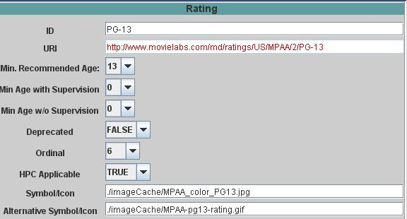
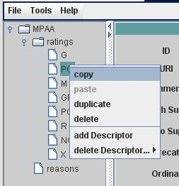

To add a new Rating to a system, use the navigation tree shown in the left-hand panel. Right-click on the 'ratings' node and then select "add new rating" from the popup menu. A new Rating will be added to the tree and an empty Rating panel will be displayed. The panel is shown here with the information used to specify the MPAA PG-13 rating:

Key points to note are:
A Rating may also be created by copying an existing Rating. To do so, first select use the navigation tree to select an existing Rating, than use the right-click to access the popup menu:

Use the duplicate menu item to insert an exact copy immediately before the selected Rating. To insert a new Rating elsewhere,
Note that this same popup menu mechanism is used to delete a Rating.
| < Previous | Top | Next > |